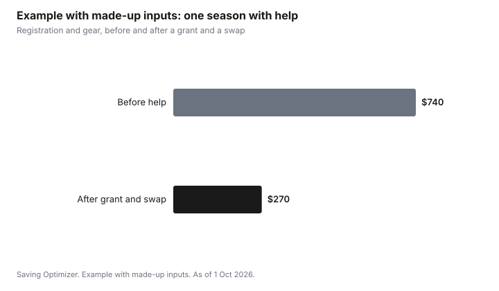

Kids · Canada
Fee Assistance for Kids' Activities in Canada: City Programs and Charitable Grants
Help with kids' activity fees in Canada comes from four places, and families can often use more than one. Your city's recreation department may run an income-based fee assistance program for its own classes. Charities such as Canadian Tire Jumpstart and KidSport fund registration fees for eligible children in community sports and activities. Many clubs and leagues have their own bursaries. After you pay, some provinces return part of the fee through a children's activity tax credit. Apply before registration, because approvals take time.
Key takeaways
- City recreation fee assistance usually covers the city's own programs, with income-based eligibility.
- Canadian Tire Jumpstart and KidSport fund registration fees through applications or local chapters. Eligibility and amounts are on their sites.
- Ask the club or league directly about bursaries, payment plans and sibling discounts.
- Provincial credits: Quebec, Manitoba, Nova Scotia and Yukon have children's activity credits. The federal credits ended.
- Example with made-up inputs: a $480 hockey registration falls to $180 with a $300 grant.
Where help comes from
| Source | What it covers | How to apply |
|---|---|---|
| City recreation fee assistance | The city's own programs | City application, often income-based |
| Canadian Tire Jumpstart | Registration fees for eligible children | Online application |
| KidSport | Registration fees for community sport | Through a local chapter |
| Club or league bursary | That club's fees | Ask the registrar |
| Provincial activity credit | Part of fees after you pay | On your tax return |
City recreation fee assistance
Many Canadian cities offer a fee assistance program for residents with low income, giving a yearly credit or a percentage discount on city recreation programs such as swimming, skating, camps and drop-in activities. Search your city's name with "recreation fee assistance" or ask at a community centre. You will usually need proof of income, such as a notice of assessment, and proof of address. Apply well before registration day.
Jumpstart and KidSport
Canadian Tire Jumpstart is a charity that funds activity costs for eligible children, including through individual child grants. KidSport is a national charity whose local chapters fund community sport registration for eligible children. Both publish eligibility rules, deadlines and the activities they cover on their own sites, and the details can change by year and region. Read them before registration, since some require the club to be registered or confirm enrolment.
Club bursaries, payment plans and gear
Ask the club or league registrar about bursaries, instalment payments, sibling discounts and volunteer credits. Many keep these quiet to protect families' privacy, so ask privately. For gear, look for equipment swaps and used sales; the secondhand gear guide covers safety, such as helmet rules. The minor hockey guide shows the gear budget for one sport.
Provincial children's activity credits
The federal children's fitness and arts credits ended. Some provinces still have their own: Quebec's refundable tax credit for children's activities, Manitoba's fitness and children's arts credits, Nova Scotia's children's sports and arts credit, with a maximum of $500 per child for 2025, and Yukon's children's arts amount, up to $500 per child for 2025. Keep receipts. The activity credits guide has the rules.
Step by step: stacking help for one season
- Before registration, find your city's recreation fee assistance program and apply; approval can take a few weeks.
- Gather documents: your most recent notice of assessment from CRA, proof of address, and the child's details.
- Check the activity's registration deadline and the charity application windows; Jumpstart and KidSport set their own dates.
- Ask the club registrar about bursaries, instalments, sibling discounts and volunteer credits.
- Apply to a charity if the activity qualifies, listing any city or club help you already have.
- Buy used gear or borrow from an equipment library or swap.
- Keep receipts for any provincial credit you can claim at tax time.
Provincial credits in more detail
| Province or territory | Credit | Notes |
|---|---|---|
| Manitoba | Fitness tax credit | Eligible fees up to $500 per child or young adult under 25; extra amount for a child eligible for the disability tax credit |
| Manitoba | Children's arts and cultural activity credit | Eligible fees up to $500 per child under 16; extra amount for a child eligible for the disability tax credit |
| Yukon | Children's fitness credit | Refundable; eligible fees up to $1,000 per child under 16 |
| Nova Scotia | Children's sports and arts credit | Maximum $500 per child for 2025 |
| Quebec | Tax credit for children's activities | Refundable; income and age rules apply |
Rules on which programs qualify differ: many require a supervised program of a minimum length, and fees for regular school programs do not count. The activity credits guide has the details by province.
If your application is refused
Ask why, and whether you can reapply with more information. Charities may run out of funds in a season and open again later. A club may still offer an instalment plan or a reduced fee privately. Some community organizations, service clubs and faith groups also sponsor children's registrations; ask your school's social worker or a family resource centre for local options.
Common mistakes
- Applying after the registration deadline.
- Assuming one source of help rules out others; many can be combined.
- Forgetting the notice of assessment, which many income-based programs require.
- Not keeping receipts for provincial credits.
- Buying new gear for a child trying a sport for the first time.
Example with made-up inputs: one season with a grant
These numbers are an example with made-up inputs, not program amounts. A hockey registration costs $480. A made-up $300 grant brings it to $180. A club payment plan splits the $180 into three payments of $60. Used gear from a swap costs $90 instead of $260 new.
| Line | Before help | After help |
|---|---|---|
| Registration | $480 | $180 |
| Gear | $260 | $90 |
| Total | $740 | $270 |

Sources
- Canadian Tire Jumpstart, as of 1 Oct 2026. Individual child grants; eligibility and amounts on the site.
- KidSport Canada, as of 1 Oct 2026. Apply through a local chapter; no national amount quoted.
- Revenu Québec, tax credit for children's activities; Manitoba Finance personal tax credits; CRA Nova Scotia 5003-PC (maximum $500 per child for 2025); CRA Yukon 5011-PC (arts up to $500 for 2025).
- Manitoba Finance, personal tax credits (fitness credit up to $500 per child or young adult under 25; children's arts credit up to $500 per child under 16), as of 1 Oct 2026.
- CRA, Yukon tax information (refundable children's fitness credit, up to $1,000 per child under 16), as of 1 Oct 2026.
- Every fee, grant and gear price in the example table and chart is a made-up input.
Frequently asked questions
Is there financial help for kids' sports in Canada?
Yes. Many cities have recreation fee assistance programs, charities such as Canadian Tire Jumpstart and KidSport fund registration fees for eligible children, and many clubs offer bursaries or payment plans.
How do I apply for Jumpstart or KidSport?
Jumpstart takes applications online, and KidSport applications go through local chapters. Each publishes eligibility rules, deadlines and covered activities on its site; read them before registration.
Does my city help with recreation fees?
Many cities offer an income-based fee assistance program for their own recreation programs. Search your city's name with "recreation fee assistance" or ask at a community centre, and apply before registration.
Is there still a children's fitness tax credit?
The federal credits ended. Quebec, Manitoba, Nova Scotia and Yukon have provincial or territorial children's activity credits; Nova Scotia's and Yukon's arts amount were up to $500 per child for 2025.
Can I ask a club for a discount?
Yes. Ask the registrar privately about bursaries, instalments, sibling discounts and volunteer credits. Many clubs have them but do not advertise them widely.
What documents do I need for recreation fee assistance?
Usually proof of income such as your CRA notice of assessment, proof of address, and your child's details. Check your city's list.
Which provinces have a children's fitness credit?
Manitoba has a fitness tax credit for children and young adults under 25, and Yukon has a refundable children's fitness credit for children under 16. Quebec and Nova Scotia have their own activity credits.
Researched and drafted with AI assistance and fact-checked against official Canadian sources. How we create content.
Disclosure: Charities are named as public programs, not partners or rankings. Saving Optimizer may earn a commission if a partner link is added later; no partnership is claimed. Education only.